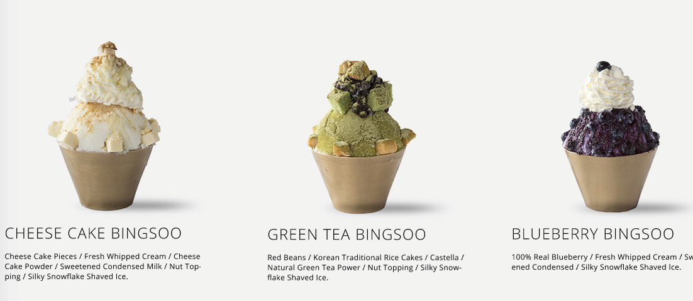

Bingsoo Recipe

Description
Similar to ice cream, bingsu is made from frozen cream or milk. It’s a type of Korean shaved ice where a block of frozen milk or cream is grated or shaved using a knife to create a fluffy, snow-like dessert.
Bingsu normally comes with toppings on top of the mound of shaved ice. Red bean, bean paste, tteok (rice cake) and groundnut powder are some of the traditional toppings. Other popular toppings include chopped fruits, condensed milk, candy and cookies.
Just like ice cream, bingsu also comes in a variety of flavours. The most popular flavours are green tea, coffee and yogurt but there are also other flavours like strawberry, chocolate, lychee and mango.
With all these flavours and toppings, the possibilities are endless!
Ingredients
- 4 ½ cups milk
- ½ cup condensed milk
- your choice of toppings (chopped fruit, red bean, condensed milk, candy, etc)
Steps
- In a freezer-safe container, mix the milk and condensed milk together using a whisk.
- Cover the mixture and freeze for at least 5 hours or overnight.
- While the mixture is freezing, prepare your toppings. You can chop up some fruits like mangoes, strawberries, kiwi or bananas. Set them aside.
- After the mixture has frozen, remove it from the container and wrap it in some plastic wrap. This will make it easier to hold.
- Hold the wrapped up milk block with a towel to protect your skin and begin shaving it into a bowl using a grater. You can also use a food processor with a grater attachment.
- Add your favourite toppings and drizzle some condensed milk on top. Enjoy!